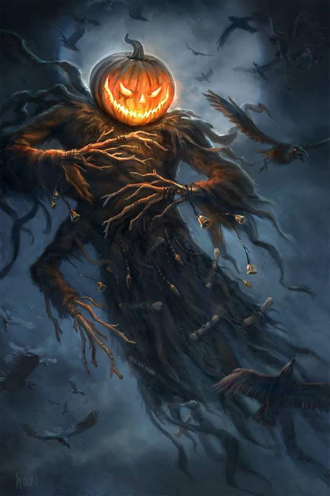
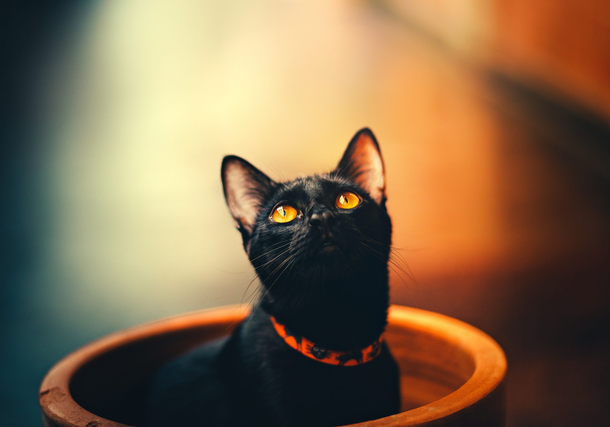

História do Halloween
A origem da festa do Halloween possui uma grande trajetória, visto ser praticada há mais de 3 mil anos. Ela surgiu com os celtas, povo que era politeísta e acreditava em diversos deuses relacionados com os animais e as forças da natureza. Os celtas celebravam o festival de Samhain, o qual tinha a duração de 3 dias, com início no dia 31 de outubro. Nela, além de se comemorar o fim do verão, comemorava-se a passagem do ano celta, que tinha início no dia 1 de novembro.
Acreditava-se que nesse dia os mortos se levantavam e se apoderavam dos corpos dos vivos. Por esse motivo, eram usadas fantasias e a festa era repleta de artefatos sombrios com o intuito principal de se defenderem desses maus espíritos. Mais tarde, durante a Idade Média, a Igreja começou a condenar o evento, e daí surgiu o nome “Dia das Bruxas”. Durante o Medievo, os curandeiros eram considerados bruxos e por se posicionarem contra os dogmas da Igreja, eles eram queimados na fogueira. Assim, na tentativa de afastar o caráter pagão da festa, a Igreja promoveu alterações no calendário, de modo que o Dia de Todos os Santos passou a ser comemorado no dia 1 de novembro, o que antes acontecia no dia 13 de maio.
Curiosidades
Por que o dia 31 de outubro?
Existem várias teorias que explicam a comemoração do Halloween em 31 de outubro. Uns dizem que esse é um dos dias de descanso das bruxas no calendário celta, outros dizem que é o tempo da morte e ressurreição da Terra.
Qual o significado do gato preto no Halloween?
O gato ganhou má fama em antigas lendas de várias civilizações. Essas afirmavam que as bruxas se transformavam em um gato preto e, para ajudar, algumas pessoas acreditavam que os gatos eram os espíritos dos mortos. Mas nem tudo está perdido. Hoje o gato preto é símbolo da capacidade de meditação, recolhimento espiritual, autoconfiança, independência e liberdade.
Quais são os símbolos do Halloween?
Há quem acredite em significados ocultos para os símbolos do Halloween. Vamos analisar alguns deles.
- A vela: indica os caminhos para os espíritos.
- O caldeirão: faz parte da cultura celta e era peça fundamental na decoração. Dentro dele, jogam-se moedas acompanhadas de mensagens com pedidos aos espíritos. Ao final da festa, essas moedas devem ser recolhidas e doadas a quem precisa. Já os bilhetes devem ser queimados para que os pedidos sejam atendidos mais rapidamente.
- A aranha: simboliza o destino. O meio da teia representa o suporte para seguir em frente.
- O morcego: simboliza a clarividência, pois o animal capta os campos magnéticos pela força da própria sensibilidade e energia, enxergando além das formas e das aparências.
Quais são as cores do Halloween?
As cores laranja, preto e roxo não foram escolhidas por acaso para representar a festa. Elas representam, cada uma delas, algo que faz sentido na cultura celta.
- Laranja: cor que traz vitalidade, energia e força. Os celtas acreditavam que os espíritos se aproximavam daqueles que se vestiam de laranja para sugar-lhes a energia.
- Preto: cor predominante dos magos, bruxas, feiticeiras e sacerdotes do mestre das trevas.
- Roxo: simboliza a magia presente em toda a comemoração de Halloween.
Acesse aqui para mais informações!